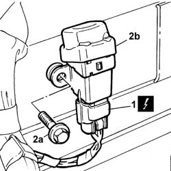

1040A74 INERTIA SWITCH for cutting off electric fuel pump circuit - R.R.
- Path
- Procedures > 10 ENGINE > 1040 FUEL TANK AND PIPES > 1040A FUEL TANK AND COMPONENTS > 1040A74 INERTIA SWITCH for cutting off electric fuel pump circuit - R.R.
- Kind
- repair procedure (removal / refitting; the operation number is the code)
- Applies to
- engines: 2.4 JTD 10V; all production periods
- Interactive page
- https://sloeber94.github.io/elrnDB-lThss/en/#/75841
Applies to: all engines; all production periods
 Removing
Removing
 Refitting
Refitting- Disconnect the negative battery terminal.
See in Op. 7025A34 bonnet lid lock (one) - r+r or repair
See in Op. 7040A37 Fuse access cover in instrument panel - R.R.
See in Op. 7025A24 Bonnet release LEVER - R.R.
See in Op. 7040L39 RUNNING BOARD FOR LEFT FRONT DOOR HOUSING - R.R.
- Release the front carpet, as necessary, on the driver's side.
1. Disconnect the electrical connector.
 | Description | Connector |
|---|---|---|
1 | Inertia switch | I050 |
2. Undo the fixing bolts (2a) and remove the inertia switch (2b).

Applies to: all engines; all production periods
Refitting
Removing- Position the inertia switch and tighten the fixing bolts.
- Connect the electrical connector.
| Description | Connector |
|---|---|---|
. | Inertia switch | I050 |
- Reposition the front carpet, driver's side.
See in Op. 7040L39 RUNNING BOARD FOR LEFT FRONT DOOR HOUSING - R.R.
See in Op. 7025A24 Bonnet release LEVER - R.R.
See in Op. 7040A37 Fuse access cover in instrument panel - R.R.
See in Op. 7025A34 bonnet lid lock (one) - r+r or repair
- Disconnect the negative battery terminal.